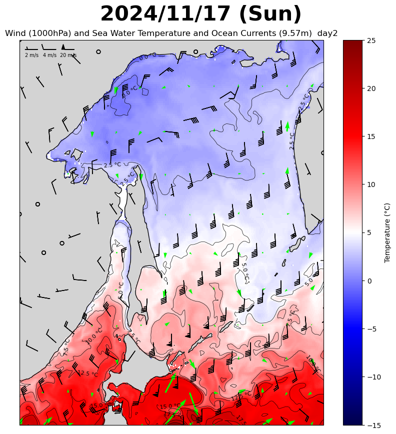

The movements of seabirds are mainly affected by season, weather conditions and distribution of food resources.
Closely related elements; sea water temperature, ocean currents and wind direction & speed are discribed in the maps below.
Latest Forecast Data:
Daily mean values of sea surface temperature and ocean currents (WD = 9.57),
wind direction and speed (ALT = 10m) at 09:00 JST.

backward trajectory analysis for 3 days


海鳥リスト
- Item 3
- Item 3
- Item 3
餌リスト
- Item 2
- Item 3